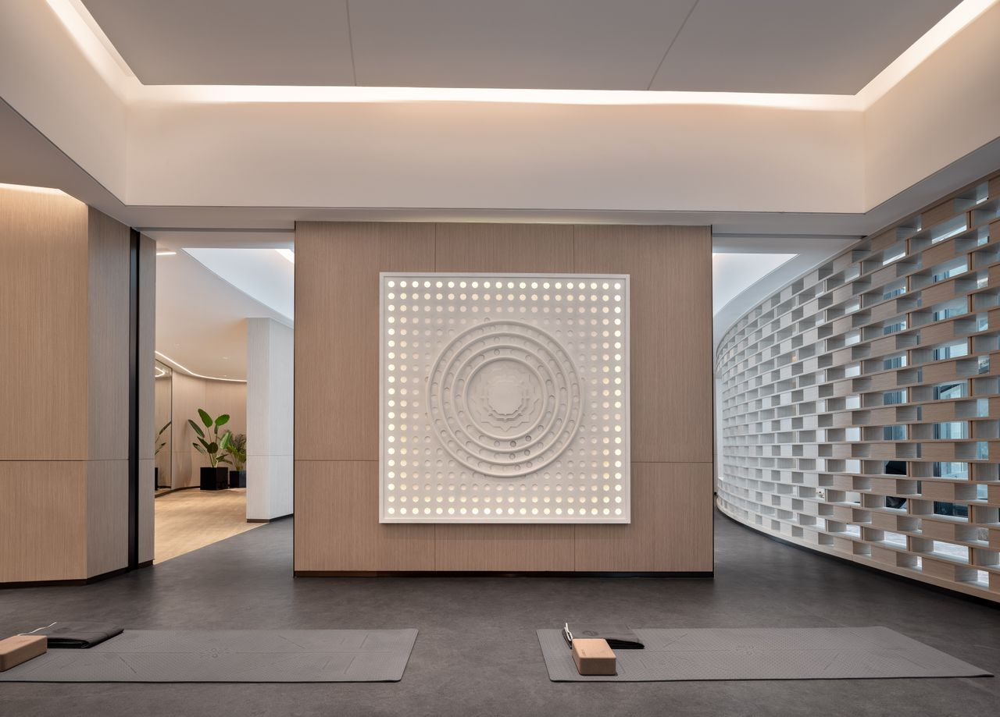

Studio Mission
Riverbend Yoga Studio provides a calm, inclusive, and supportive space where beginners, busy professionals, and older adults can find peace of mind and cultivate their own mindful practice.
Beginner Reassurance
New to yoga? You are warmly welcomed here regardless of your flexibility or past experience. Our supportive instructors guide you safely through foundational poses at your own pace.
Featured Class
Join our Gentle Flow class this week, designed around mindful breathing and restorative stretching to melt away your daily stress.
Explore Our Studio Space
